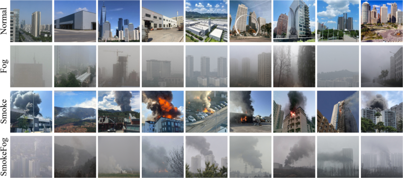

FSBench-40K 项目说明
面向雾环境下烟雾检测的四分类图像数据集，与 HPRM-Former 配套。
English · 数据申请表 · 英文申请指南 · 英文使用要求

图中为概念性应用流程，所示置信度用于示意。
任务与类别
图像级分类包含 Normal、Fog、Smoke 和 SmokeFog，分别对应正常环境、雾、烟以及烟雾与大气雾共存。研究重点是区分雾与烟，并检测雾干扰下的烟雾状态。

上图各行依次为 Normal、Fog、Smoke 和 SmokeFog，仅用于说明类别外观。
获取方式
本仓库用于项目介绍、图像展示和申请材料发布。申请人下载并填写申请表，注明研究项目、使用人员、用途和数据保管方案，签字后发送至通讯作者 Haicheng Qu（quhaicheng@lntu.edu.cn）。经审核同意后，由通讯作者提供完整数据及相应版本、类别和训练／验证／测试划分说明。
完整数据不必放在 GitHub。复现实验时，应申请与论文实验对应的固定版本；展示图不作为交付清单。
主要使用要求
- 仅在获批的研究目的、项目和使用期限内使用；商业、产品开发或实际业务用途需另行说明并获得书面许可。
- 仅限申请人及获批团队成员访问；新增成员、负责人或机构变更应先更新申请。
- 如实填写身份、机构及项目资料，优先使用机构邮箱；没有机构邮箱时提供可核实的研究身份信息。
- 使用受访问控制的存储，保护下载链接和备份；外部云服务或第三方处理平台应在申请中说明。
- 不向未获批人员提供数据包、逐图副本或访问链接，不建立未经允许的公开镜像；原始第三方许可已经赋予的权利不受此项限制。
- 保留来源说明，遵守交付清单中的第三方条件；本项目不授予其无权授予的版权许可。
- 按交付的引用信息注明数据集、关联论文及必要的原始来源，并报告所用数据版本。
- 基准比较保留图像编号和划分清单，测试集不参与选模型；自定义划分、额外训练数据、重标注及预处理变化应明确报告。
- 可以正常发表汇总结果和模型研究；发布样例原图或包含可还原原图的衍生数据前检查相应许可，不以结果有利或共同署名作为访问条件。
- 仅开展声明的视觉研究，不识别或联系图中个人，不提取与研究无关的个人信息。
- 发现重复、标签、来源权利或数据暴露问题时，提供版本和图像编号反馈，并记录实验采用的本地修订。
- 研究之外的使用应自行验证适用性；数据访问不构成对模型或实际火灾预警系统的认证。
- 项目目的、成员、机构或期限变化时申请更新；期满按书面批准记录处理保留、延期或删除。
- 申请表私下发给通讯作者，仅用于审核和访问管理，不在公开GitHub Issue中提交个人信息。
引用与联系
HPRM-Former 的完整英文题名、作者及引用格式见 英文首页。当前使用审稿中稿件的引用格式，发表后更新正式出版信息。数据访问与许可事宜请联系 quhaicheng@lntu.edu.cn。